이번에는 CloudNet@를 통해 학습한 내용을 기반으로,
- AZ를 대상으로 한 data 조회
- AWS VPC 생성 예제로 살펴보는 output
- resource 이름 변경
순으로 알아보도록 하겠습니다.
교재로 사용한 [테라폼으로 시작하는 IaC] 도 참고하였습니다.
기본 설정
- aws-cli에 리전을
ap-northeast-2을 설정하였습니다.
$ aws configure list
Name Value Type Location
---- ----- ---- --------
profile <not set> None None
access_key ****************2U5J shared-credentials-file
secret_key ****************Z0co shared-credentials-file
region ap-northeast-2 config-file ~/.aws/config
1. data 조회
data는 사용자가 정의하는 resource 및 리소스에 대한 스펙과 반대로,
provider(이번 포스트에서는 aws)에서 제공하는 리소스를 조회하는 기능입니다.
(1) data 조회를 위한 tf 파일 작성
이번에는 작업 대상 폴더 내의 루트 경로에 az.tf 파일만 작성을 합니다.
# az.tf
data "aws_availability_zones" "available" {
state = "available"
}
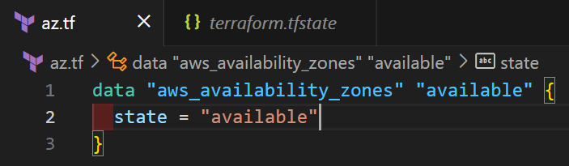
-
해당 파일은 AWS(프로바이더)가 제공하는 AZ 중에서,
사용가능한 AZ들을 조회하여 available이라는 데이터로 가져옵니다. -
작성 후에 아래와 같이 명령어를 적습니다.
(다른 파일도 있는 경우에는--auto-approve옵션을 빼고 실행하여 확인하기 바랍니다)
terraform init -upgrade && terraform apply -auto-approve
-upgrade옵션은
(1) 기존 테라폼 lock파일을 무시하고, 사용 중인 플러그인을 업데이트 하는 역할을 합니다. (2) 이 경우에는 az.tf 파일 하나만 있기에, AWS(프로바이더)에서 제공하는 정보들을 lock파일에 재작성한다고 이해하면 될 것 같습니다. (3) 자세한 사항은 Terraform CLI에서 확인할 수 있습니다.
(2) tfstate 확인
- tfstate 파일에서 가용할 수 있는 AZ 목록을 확인할 수 있습니다.
"resources": [
{
"mode": "data",
"type": "aws_availability_zones",
"name": "available",
"provider": "provider[\"registry.terraform.io/hashicorp/aws\"]",
"instances": [
{
"schema_version": 0,
"attributes": {
"all_availability_zones": null,
"exclude_names": null,
"exclude_zone_ids": null,
"filter": null,
"group_names": [
"ap-northeast-2"
],
"id": "ap-northeast-2",
"names": [
"ap-northeast-2a",
"ap-northeast-2b",
"ap-northeast-2c",
"ap-northeast-2d"
],
"state": "available",
"timeouts": null,
"zone_ids": [
"apne2-az1",
"apne2-az2",
"apne2-az3",
"apne2-az4"
]
},
"sensitive_attributes": []
}
]
}
],
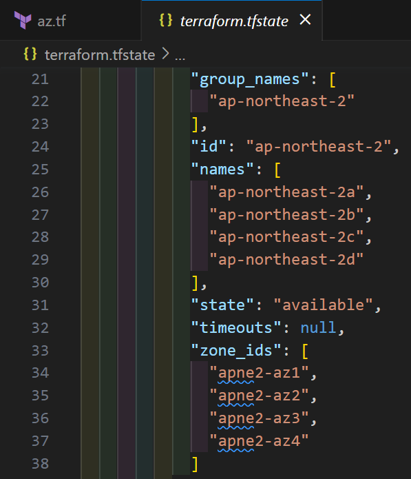
- 파일을 직접 확인하지 않아도, terraform 명령어를 통해서도 조회가 가능합니다.
terraform consoleterraform state show
(1) terraform console
- 파이프로 리소스를 전달하여, 조회합니다.
echo 'data.aws_availability_zones.available.names' | terraform console
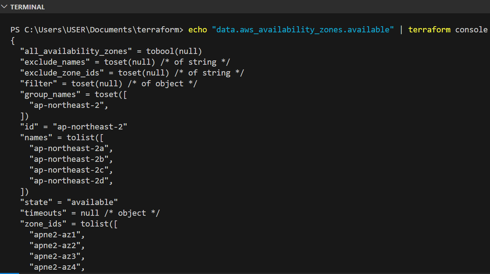
(2) terraform state show
terraform state: state 관리를 위한 서브 커맨드를 제공.- list / mv / pull / push / replace-provider / rm / show
- subcommand
show: 지정한 리소스의 state를 조회.
terraform state show data.aws_availability_zones.available
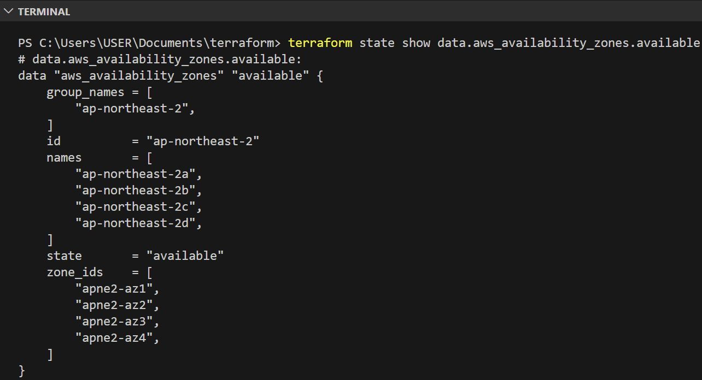
2. output 알아보기
- 지난번의 예제에서는 생성된 인스턴스를 확인하기 위해,
별도로 aws-cli를 구동하여 IP를 획득하였습니다. - 번거로울 뿐만 아니라, 생성되는 정보를 파악하기 힘들기 때문에 그 다음 액션을 취하기 대단히 어렵습니다.
이번에는 output을 활용하여, 생성된 VPC ID를 얻어보도록 하겠습니다.
(1) VPC 리소스 생성 파일 작성
- 루트 폴더에
vpc라는 폴더를 생성하고, 아래와 같은vpc.tf파일을 생성합니다.
mkdir vpc && cd vpc
# vpc.tf
provider "aws" {
region = "ap-northeast-2"
}
resource "aws_vpc" "primary_vpc" {
cidr_block = "172.16.0.0/16"
tags = {
Name = "t101-vpc-primary"
}
}
resource "aws_vpc" "secondary_vpc" {
cidr_block = "172.18.0.0/16"
tags = {
Name = "t101-vpc-secondary"
}
}
output "aws_vpc_primary_id" {
value = aws_vpc.primary_vpc.id
}
output "aws_vpc_secondary_id" {
value = aws_vpc.secondary_vpc.id
}
- output에 표시할 값으로 각 VPC 리소스의 ID를 가져오도록 하였습니다.
- 참고) 작성시점 기준,
172.17.0.0/16CIDR은 AWS의 일부 서비스(AWS Cloud9/Amazon SageMaker)에서 사용하므로 피하도록 합니다. (링크: AWS VPC Docs)
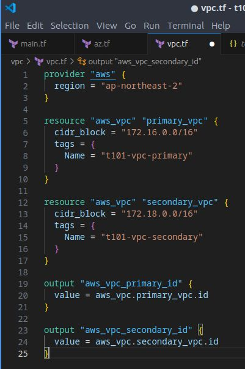
-
같은 backend를 바라보고 있지 않으므로,
terraform init을 하고,
terraform plan으로 확인해보고,terraform apply를 해봅니다. -
plan: 실제 적용을 하지 않기에,output란에는(known after apply)로 표기됨을 확인
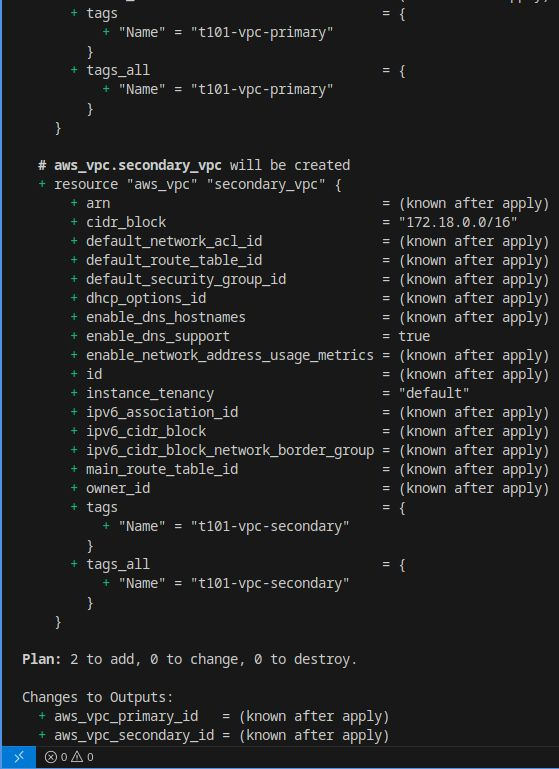
apply: (yes를 선택하여 적용 후)output란에 각 VPC의 ID가 표기됨을 알 수 있습니다.
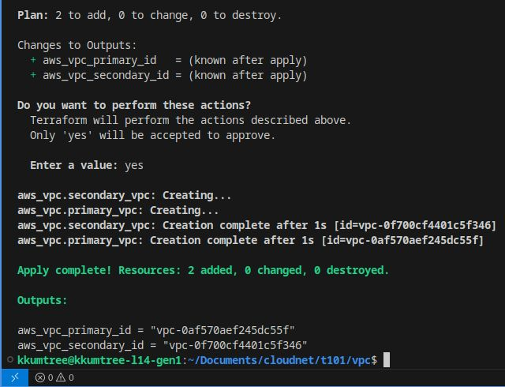
(2) output 값 조회
- 이렇게까지 output에 대해 알아볼 수 있는 기회가 없었었기에,
output은 단순히apply단계에서만 확인할 수 있는 출력값으로만 여겼었습니다. - 하지만, 이번 시간에는 이렇게 출력되도록 설정한
output값을 재조회 해보도록 하겠습니다.
# 전체 output 조회
terraform output
# 특정 output 값 조회 (e.g. aws_vpc_primary_id)
terraform output aws_vpc_primary_id
# '개행없이' 특정 output 값 조회
terraform output -raw aws_vpc_primary_id
- 개행없이 출력하는 옵션은 여러모로 유용해보입니다.
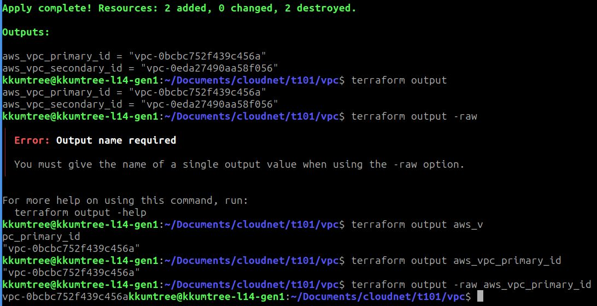
3. resource 이름 변경
- 앞에서 두 VPC 리소스를 tf파일 내부에서
primary_vpc와secondary_vpc란 이름으로 지정하였습니다. - 현재, 각 VPC ID는 아래와 같이 확인됩니다.
- t101-vpc-primary: vpc-0af570aef245dc55f
- t101-vpc-secondary: vpc-0f700cf4401c5f346
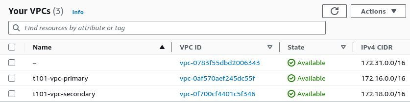
- 이번에는 이 이름을 수정해보고, 적용해보면서 terraform에서 이를 어떻게 처리하는 지 알아봅시다.
provider "aws" {
region = "ap-northeast-2"
}
resource "aws_vpc" "kkumtree_first_vpc" { // UPDATE HERE
cidr_block = "172.16.0.0/16"
tags = {
Name = "t101-vpc-primary"
}
}
resource "aws_vpc" "kkumtree_second_vpc" { // UPDATE HERE
cidr_block = "172.18.0.0/16"
tags = {
Name = "t101-vpc-secondary"
}
}
output "aws_vpc_primary_id" {
value = aws_vpc.kkumtree_first_vpc.id // UPDATE HERE
}
output "aws_vpc_secondary_id" {
value = aws_vpc.kkumtree_second_vpc.id // UPDATE HERE
}
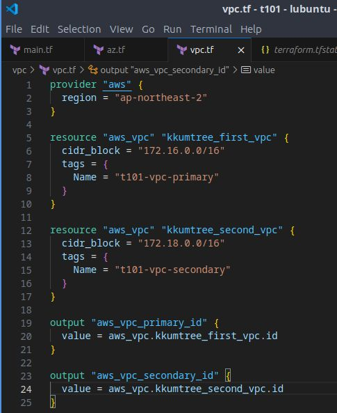
- 당연하게도
terraform apply로 변경사항을 적용합니다.
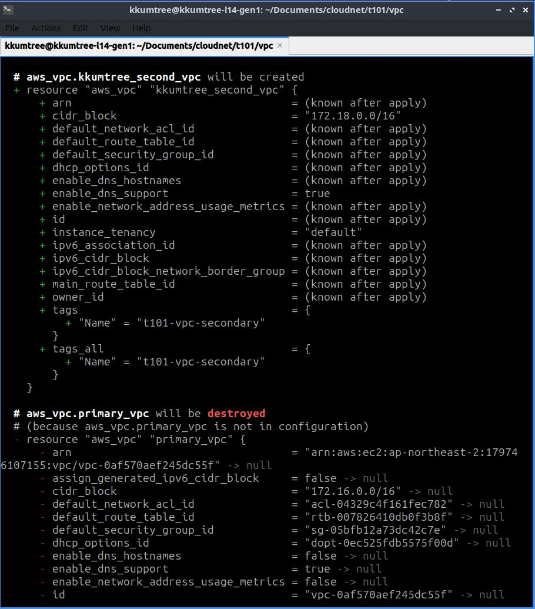
-
혹시, 이때 뭔가 위화감이 들지 않나요?
- cidr_block 값을 바꾸지 않았고,
- 기존에 생성된 VPC에 대해 terraform 상에서 관리하는 리소스명만 바뀌었는데
destroyed가 뜹니다!
-
이유는 terraform의 immutable 원칙(Tao/도?)때문입니다.
-
기존의 인프라를 수정하거나 업데이트하는 것이 아닌,
변경된 정보로 새로운 인프라를 생성하여 교체합니다. -
F1 피트 스톱에서 바퀴를 갈아끼는 것을 연상하면 이해가 쉬울 수도 있을 것 같습니다.
(참고로, VPC 블록도 한 번 정하면, 대역을 변경할 수 없습니다) -
아래와 같이, VPC ID가 변경(교체)되었음을 확인할 수 있습니다.
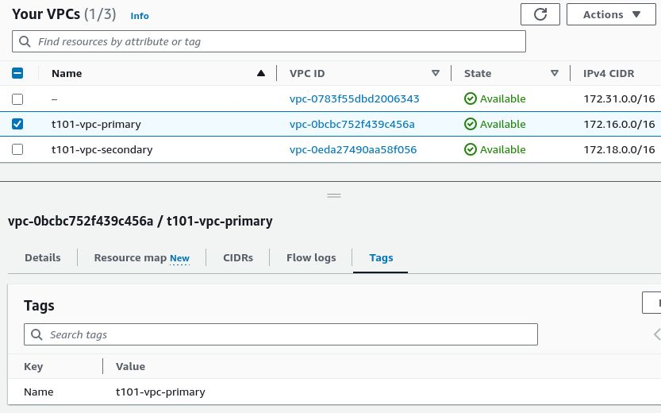
마무리 및 느낀점
- 이번에는 아래의 사항을 중점으로 알아보았습니다.
- output의 필요성과 활용
- terraform의 immutable 속성
- 덤으로,
172.17.0.0/16CIDR은 사실상 AWS에서 예약한 VPC CIDR 블록임을 알 수 있었습니다.